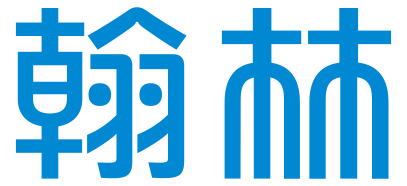

翰林物理 EXPO ・ 探究科學報1897 年，湯姆森在放電管裡看見了它。128 年後，它的集體行為讓一座巨觀電路展現出量子穿隧——這是電子從發現、被理解、到被「操控」的完整故事。
在正式回到 1897 年之前，先看看電子的故事在今天走到了哪裡——這也是這整份報告的起點與終點。
John Clarke、Michel H. Devoret 與 John M. Martinis
三人因在超導電路中證明了「巨觀量子力學隧道效應」與「能量量子化」而獲獎。量子現象一般只存在於原子等級的微觀世界，難以被直接觀測；但這項研究利用超導體中電子配對而成的「庫柏對」，讓量子穿隧與能階量子化第一次能在一顆可以用手操作的電路裡被看見、被測量。
這不只是一項理論上的肯定，更是量子計算、量子感測與量子資訊技術邁向實用化的重要一步。而要真正讀懂這個成果，得先回到電子被發現的那一刻——1897 年。
從陰極射線管裡的一道偏折射線，到一條能描述機率的波動方程式——三十年間，電子從「一種射線」變成了「量子世界的基本語言」。點擊年代展開內容。
電子，開始「做工」。1926 年之後，電子已經是量子力學裡「以機率分布」的基本粒子。但它真正走進每個人的生活，是從 1948 年那顆會放大電流、會開關的小小晶體管開始——理論物理，正式接上了產業鏈。
從貝爾實驗室的第一顆電晶體，到一整片能容納數十億元件的晶圓——電子不再只是被觀察的對象，而是被精確操控、大規模整合的「工程材料」。
改編自 114 年度分科測驗題組與課後演練，涵蓋光在介質中的衰減、電子發現史與本篇核心概念。作答後可查看詳解。